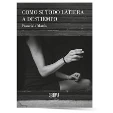

La segunda recomendación es para los aficionados al romance young adult.
Por esa razón, elegí "The Spanish Love Deception" de Elena Armas, o en español "Farsa de amor a la española"
A continuación, les dejo la SINOPSIS
Por último, quería recomendarles un libro de romance, pero por una autora argentina y ambientado en el mismo país.
El título es "Como si todo latiera a destiempo" de Francisla Marós
Si quieres conocer de qué trata esta historia, acá les dejo la SINOPSIS

Por otro lado, si queres leer un libro de una autora argentina pero ambientado en otro lugar, Un Amor Agridulce es la opción correcta.
Te dejo la trama por si queres saber de qué trata: SINOPSIS